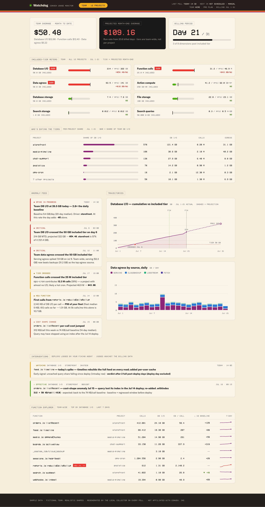

One prompt, and your agent builds a local dashboard on the same usage numbers Convex bills you on. It runs on your machine — your token never leaves it.
Tier meters, per-project attribution, anomaly feed, projected overage in dollars — on your real usage, on your machine. Sample data shown.

Build me a local billing watchdog for my Convex team. Fetch https://convex-doctor.fagner.ink/billing/llms.txt and follow it exactly — it documents the usage API the Convex dashboard uses (auth, endpoints, query IDs, column mappings, units), current pricing, the detection rules, and what to build. Rules: - I'm already logged in to the Convex CLI (~/.convex/config.json). - My access token is a full-account credential: send it only to https://api.convex.dev — never log it, commit it, or embed it in generated files. - Work in this directory. Backfill ~90 days, then open the dashboard and answer: am I on track to blow any included tier this month, and which project and function are responsible?
The prompt is the distribution. No package to install, no versions to chase — your agent reads the spec, writes code that fits your machine, and you own every line of it.